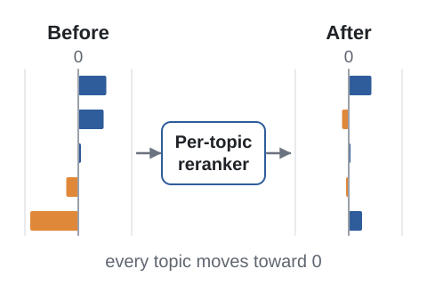
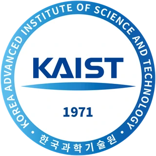
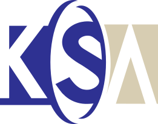

Under review
Topic-Level Fairness in Retrieval-Augmented Generation
A lightweight reranker that steers which documents reach the LLM toward a target property, with no index rebuild and no generator retraining.
- arXiv
My research uses external memory, such as retrieved documents or a replay buffer of past examples, to improve model performance. I work on retrieval-augmented LLMs and continual learning, and I'm now bringing these ideas to vision-language-action (VLA) models.
I'm a PhD candidate in Electrical Engineering at KAIST, advised by Steven Euijong Whang in the Data Intelligence Lab. I'm looking for research internships; feel free to email me.

Under review
A lightweight reranker that steers which documents reach the LLM toward a target property, with no index rebuild and no generator retraining.
VLDB 2024
Chooses which samples to label next, using an adversarial multi-armed bandit to balance informativeness against postponing samples whose predicted labels look unhelpful.
SIGMOD 2023
Flips as few training labels as possible so that similar examples end up with similar labels; the problem is NP-hard, so iFlipper solves a linear-programming approximation with theoretical guarantees.

Data Intelligence Lab, Advisor: Steven Euijong Whang
Data Intelligence Lab, Advisor: Steven Euijong Whang
Minor in Biological Science
Presidential Science Scholarship, Korea Student Aid Foundation

Hanseong Nobel Scholarship for Gifted Students
IEEE International Conference on Big Data and Smart Computing
ACM Conference on Fairness, Accountability, and Transparency, Seoul, Korea
Teaching assistant at KAIST